The Beginning
Founded in 1988
The Mara Hyena Project was co-founded by Dr. Kay Holekamp and Dr. Laura Smale of Michigan State University on May 15, 1988. What began as a three-year study to understand how female spotted hyenas came to dominate males grew into one of the longest continuously running wildlife studies in Africa.
From the outset, the project established a commitment to individual-level data collection, identifying every hyena in the study clan by spot pattern and ear notches, and recording detailed behavioral observations on each animal from birth through adulthood. This longitudinal approach is what makes the MHP dataset uniquely powerful.
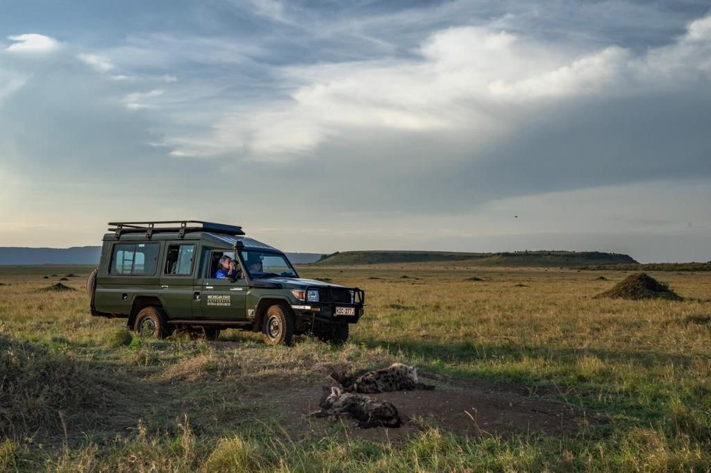
May 15, 1988
Project Founded
Dr. Kay Holekamp and Dr. Laura Smale arrive in the Maasai Mara and begin the study, initially focusing on a single hyena clan near Talek. Kay and Laura focused on slowly habituating hyenas to the presence of research vehicles, a process that laid the groundwork for everything that followed.
At this time, the study focused on just one clan of roughly 50 hyenas, and Talek town was a small settlement of only a few hundred people with no school or hospital. Local Maasai community members would often seek Kay's help when they needed medical attention, calling her Mama Fisi, meaning hyena lady, and Kay would do what she could or drive them to the hospital in Narok.
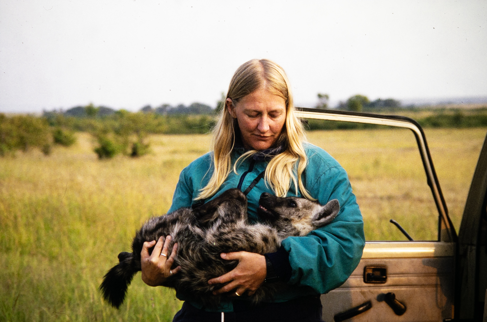
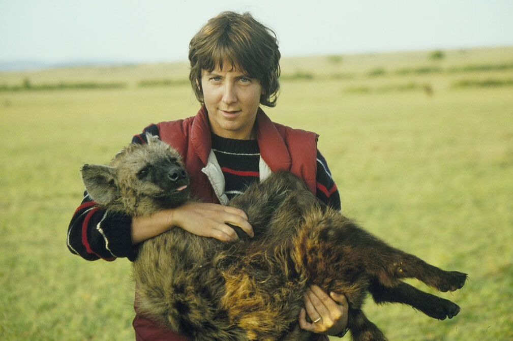
1988 onwards
One Question Becomes Many
What started as a single question about female dominance quickly gave rise to a whole new set of questions: What happens when male offspring leave their natal clans and disperse? What shape does hyena intelligence take? Does rank at birth affect adult outcomes? Each answer opened new avenues of inquiry that continue to drive MHP research today.
1992
Kay and Laura Join MSU Faculty
Dr. Holekamp and Dr. Smale both join the faculty of Michigan State University, establishing the institutional home the MHP has maintained ever since. Dr. Smale subsequently founded an independent neuroscience lab at MSU, while Kay continued leading the hyena project. Laura remained closely connected to the project, serving on the PhD committees of many of Kay's students over the following decades.
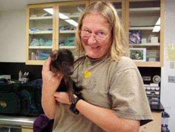
2008
Second Field Site Opens at Serena
The project expands to a second field camp near Serena Lodge, adding the Serena North, Serena South, and HZ clans to the study. This expansion provides a spatial comparison across the reserve and substantially increases the scope of long-term data collection.
2010
Malit Benson Pion Joins the Project
Malit Benson Pion grew up herding cattle in the Talek region and as a boy would hide from the MHP's research vehicles, mistaking them for ranger vehicles, having no idea that the people inside were studying hyenas. He joined the project in 2010 as an assistant cook, and his dedication and aptitude quickly became clear as he took on increasing responsibility within the field operation. By 2011 he had become a Research Assistant, and by 2020 he was leading field operations as Director of Operations.
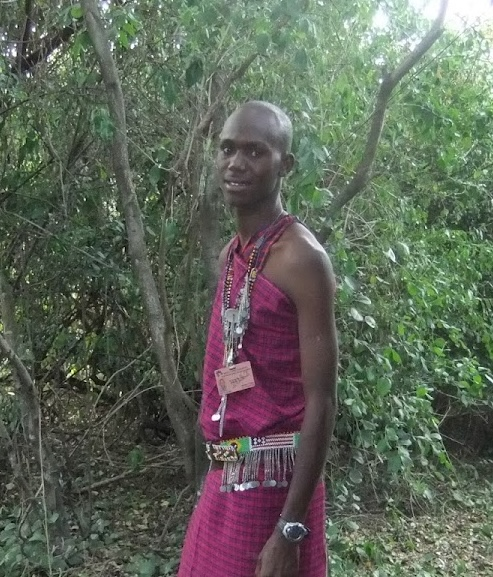
2010
Dee White Joins the Project
Dee White and Kay Holekamp's connection goes back over 40 years. Dee was Kay's supervisor when Kay worked as a zookeeper at the St. Louis Zoo, long before the MHP existed. After Dee retired, she and Kay reconnected, and Dee began working as Kay's data manager and assistant. In 2010, Kay invited her to visit the field site in Kenya, fulfilling a lifelong dream of Dee's. She traveled to the Mara with Kay for many summers and later joined the project formally as Data Manager, where her meticulous care has helped maintain the integrity of one of the longest-running animal behavioral datasets in the world.
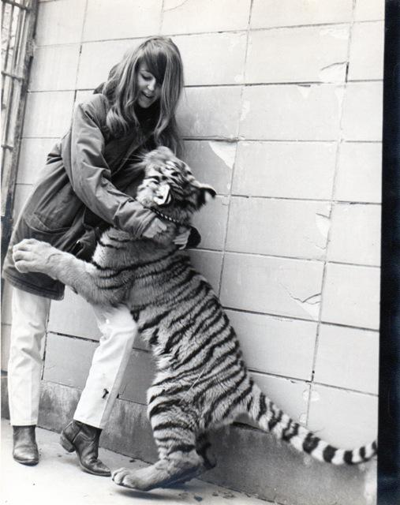
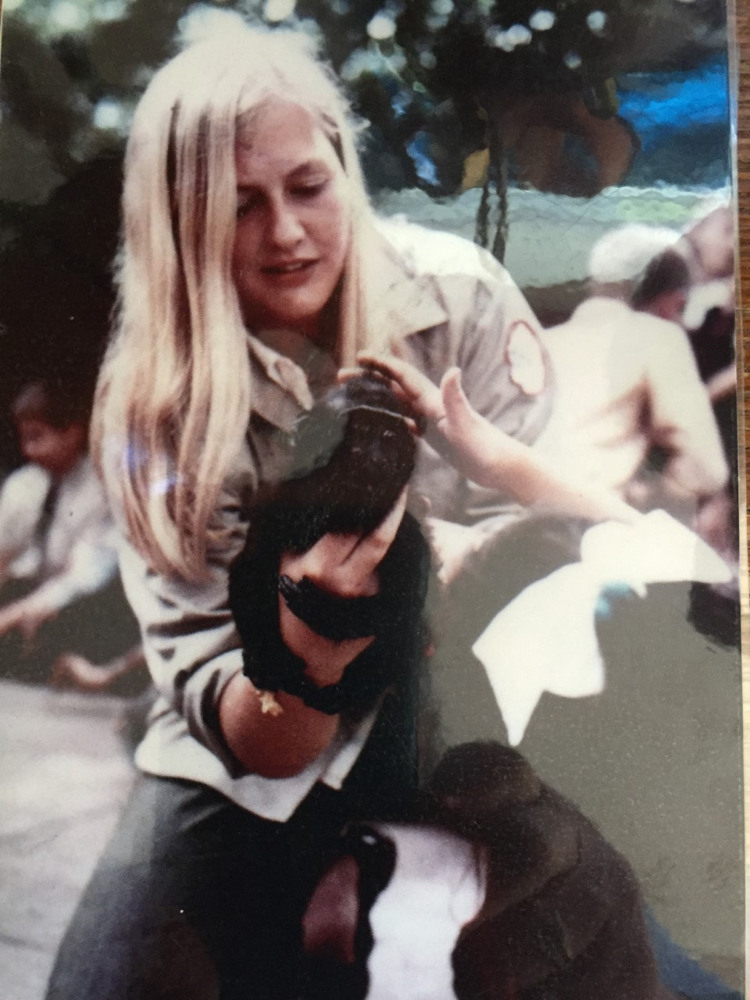
2009–2013
A New Generation Joins the MHP
Six young scientists who would go on to lead the MHP each began as volunteer Research Assistants in the Maasai Mara before pursuing their PhDs with Kay:
- Kenna Lehmann, RA 2009–2010
- Zach Laubach, RA 2010–2011
- Tracy Montgomery, RA 2010–2011
- Malit Benson Pion, RA 2011
- Eli Strauss, RA 2011–2012
- Lily Johnson-Ulrich, RA 2013–2014
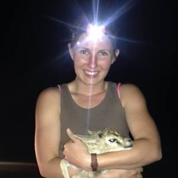
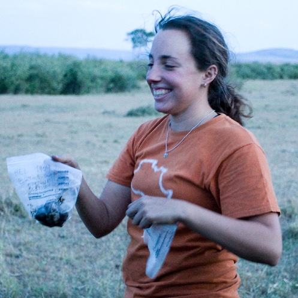
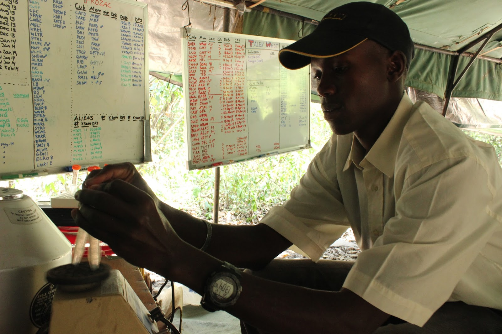
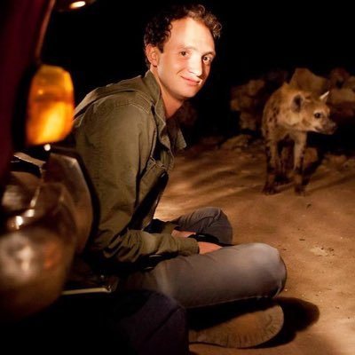
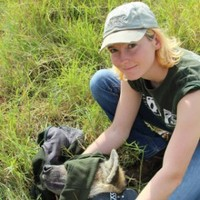
2017–present
The Transition Team
Eli, Tracy, Kenna, Zach, and Lily form the "Transition Team" with the explicit goal of continuing the MHP past Kay's retirement, ensuring the long-term continuity of a study that cannot be replicated or restarted.
2018
30th Anniversary
The MHP marks 30 years of continuous operation, with over 150 peer-reviewed publications and a growing team of students and collaborators who trained with the project and have carried its questions forward into their own research programs.
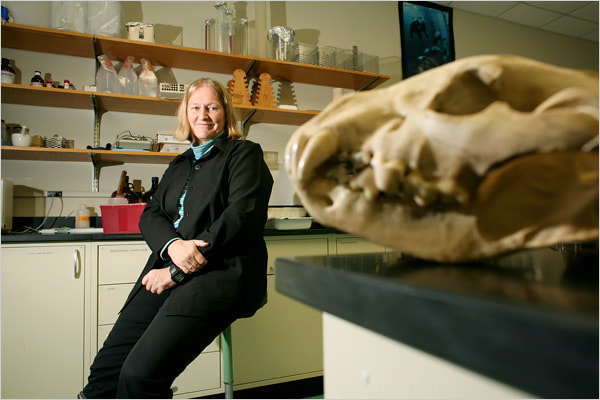
2020
Benson Becomes Director of Operations
Malit Benson Pion, who joined the project as an assistant cook in 2010 and worked as a Research Assistant from 2011, takes on the role of Director of Operations, leading the day-to-day running of both field camps and becoming an indispensable anchor of the entire project.

2023–2025
A Year of Transitions
Dr. Kenna Lehmann joins the faculty of Michigan State University in 2023. In 2025, Kay Holekamp retires from full-time faculty duties after 37 years at Michigan State University, though she continues to visit the field every summer and is currently writing a book about spotted hyenas. Dr. Eli Strauss and Dr. Tracy Montgomery join MSU as Assistant Professors, and Dr. Lily Johnson-Ulrich joins Hunter College, CUNY as an Assistant Professor.
Present
35+ Years and Counting
The MHP continues daily monitoring of seven hyena clans across the Maasai Mara, with an expanded team of Co-Directors, a dedicated Kenyan field staff, and new research initiatives on collective behavior, GPS collaring, cognition, urbanization, and conservation. The questions Kay and Laura started asking in 1988 are still very much alive.